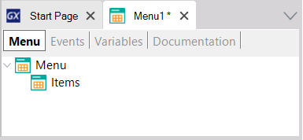
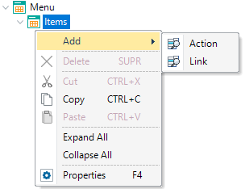

Displays a set of items the user may choose to take actions.
A Menu is usually the entry point of a Native Mobile application. It displays a set of items the user may choose from, for example, it may display items such as Work With objects, Panel objects, Menus, links to web pages or actions like making a phone call or sending an email.
You can create a Menu object through the New Object dialog.
Remarkable properties of Menu object are listed below.
Once a Menu has been created it will have a tree-like interface where you can add the items you wish to be displayed on it, and adjust their properties to your needs.

Selecting the 'Menu' item on the tree, there are the following properties available.
- Title property
Title for this Menu.
- Background property
Menu background image. It must be an Image object.
- Header property
Menu header image. It must be an Image object.
- Class property
Menu theme-class.
- Control property
Can be List, Tab, or Table.
- Tabs Distribution property
Only visible when Control property value is Tabs. Indicates how the Tab options will be distributed in the Tab control for the Menu. Possible values are Platform Default, Fixed Size, and Scroll. The
Fixed Size value applies when the control has few options (at most five), in that case, each of them has the same width in the Tab control. On the other hand, the Scroll value puts each option with the needed width depending on the image and caption. This option allows scrolling the tab control when the number of options exceeds the width of the screen.
Applies only for Android, Tab control in Menu always behave as Fixed Size value for iOS applications.
- Appearance group
The Items are the elements that will compose the Menu (generally Work With associated with the Transaction object or Panels). To add new Items drag the object from the folder view and drop it in the Items node of the Menu. Also, you can right-click on Items node following by Add Action.

Each Item has the following properties.
- Name property
Name of the option. This name will be referred to as its action on the Event tab.
- Description property
Description of the option. If its value is empty, the property name will be is used. If you want an empty description on the Menu, it is needed to add a blank space in the property.
- Image property
An icon used for the option. It must be an Image object. If Control property for Menu node is set to Tabs, iOS and Android require the image file format to be PNG and only its transparency will be taken into account.
- Class property
MenuItem theme-class used for the option.
- (1) Deprecated as of Genexus 15 Upgrade 10 (no longer available).
- As of GeneXus 16 upgrade 2, when using Tab control for Menu options, the ActivePageChanged event, and the Menu.ActivePage property is available to be used in the object events.
- In iOS, showing a Menu as Tabs only works for the main object. If the Menu is not the application's main object and it has the Control property set to Tabs, it will be shown as a List. This is to conform to Apple's Human Interface Guidlines that state that:
In general, use a tab bar to organize information at the app level. A tab bar is a good way to flatten your information hierarchy and provide access to several peer information categories or modes at once. ... A tab bar enables global navigation for your app, so it should remain visible everywhere.
 Conceptual model of mobile applications Conceptual model of mobile applications
|